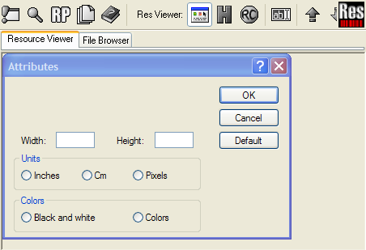
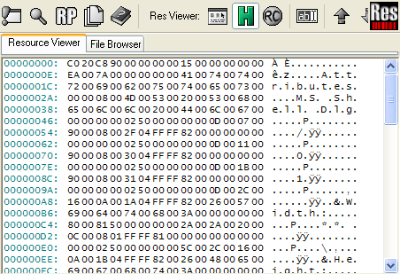
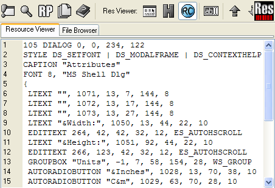
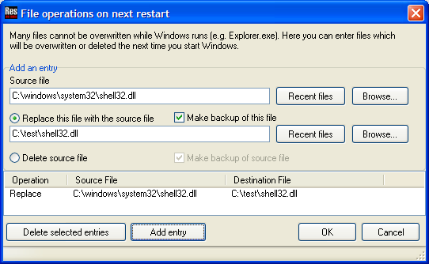
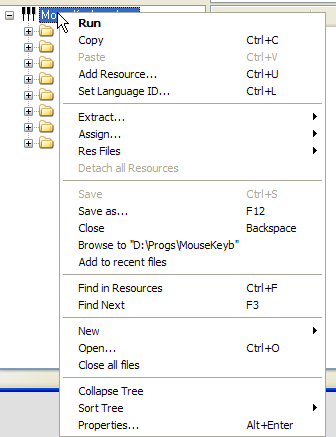
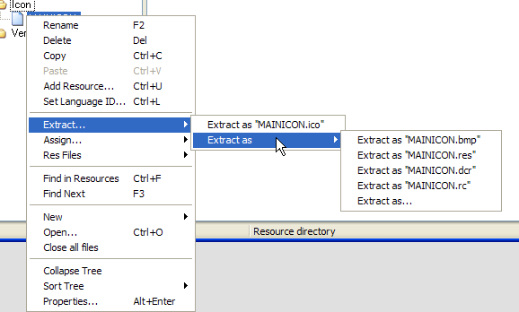

|
Help Overview Manual Tutorials FAQ Purchase Restorator Web |
Restorator
Reference Manual
Table of Contents
- Overview
- Features
- What's new
- Usage Tutorials
- Keyboard Shortcuts
- Commandline Parameters
- RC File support
- Menu
- License
- Uninstall
- Acknowledgements
- Glossary
Overview
Restorator is a resource editor for Windows. Resources are additional data accompanying a Windows application. Resources are usually part of the application interface. E.g. dialogs, menus, images, text, icons etc. They are usually stored with the executable or dll (see below for other possible Resource Files). Restorator can edit those resource files and thereby change the look and feel or language of an application completely independent of the development and compile tools.
You can edit resources directly in the executable, e.g. by opening an exe file. Main usage:
- For localizing (translating)
programs:
Restorator allows to localize entire applications:
You can edit all resources that contain text, and translate them to different languages. Also, with an external image editor, you can translate texts that appear in images. - As a resource editor:
For developers - manage your .res, .dcr and other files containing resources efficiently with Restorator - As a skin editor:
Modify the user interface of any Windows 32-bit program and create your own custom applications
Restorator makes it easy to view, extract, and change resources like images, icons, text, menus, dialogs, sounds, animations, and many more. Among the file types understood by Restorator are exe, dll, res (resource files), rc (resource compiler), ocx (Active X), scr (screen saver), dcr (delphi component resource) and many other file types.
See Resource Files for a complete listing.
|
The
single best hint is to watch the statusbar whenever you scroll
over an option .
|
Features
Restorator helps you to transform
an application's appearance.
The core features are:
- Easy accessible browsing of resource files
- Manipulation of text elements and dialogs in the application
- Editing dialogs WYSIWYG
- Adding multi language support to applications
- Save modifications to be applied later. ResPatcher
- Locating resources on your hard drive
- Locating elements in resources
- Integrate editing tools for images, translation etc.
See also the complete list of features or the list of resources types supported by Restorator.
What's new in Restorator 2007
See the Version History.
Usage Tutorials
The tutorials provide the best possibility to understand the power and features of Restorator. They give step-by-step explanations how to achieve certain tasks.
Keyboard Shortcuts
Restorator's most important functions can be activated by way of keyboard shortcuts.
| Shortcut | Function |
|---|---|
| Alt+Enter | Resource Properties (Resource Tree) File Properties (File Browser) |
| Ctrl+Left | Go Back (File Browser) |
| Ctrl+Right | Go Forward (File Browser) |
| Alt+Left | Collapse current resource item in tree |
| Alt+Right | Expand current resource item in tree |
| Alt+Down | Next Resource |
| Alt+Up | Previous Resource |
| Ctrl+A | Select All (text editor, File Browser) |
| Ctrl+Alt+N | New Folder (File Browser) |
| Ctrl+C | Copy to Clipboard (text editor, Resource Tree) |
| Ctrl+D | Detach |
| Ctrl+F | Find in Resources |
| Ctrl+L | Set Language ID/Locale for a resource or resource tree |
| Ctrl+N | New... |
| Ctrl+O | Open |
| Ctrl+R | Run the current exe file |
| Ctrl+S | Save |
| Ctrl+U | Add Resource |
| Ctrl+V | Paste from Clipboard (ab text, resources in resource tree) |
| Ctrl+X | Cut to Clipboard (ab text) |
| Ctrl+Y | Redo (ab text) |
| Ctrl+Z | Undo (ab text) |
| Delete | Delete current selection (ab mode), delete resource (Resource Tree) Delete File(s) (File Browser) |
| Backspace | Close File (Resource Tree) Parent Folder (File Browser) |
| Ctrl+Shift+F | Find Resources |
| Ctrl+Shift+G | Grab Resources |
| Ctrl+Shift+N | Force File Replace on next Restart |
| Ctrl+Shift+R | Create ResPatcher |
| Ctrl+Shift+S | Settings |
| Ctrl+Shift+V | Paste as new resource file |
| Ctrl+Shift+X | Create XP Manifest |
| F1 | Help |
| F2 | rename resource (Resource Tree) rename file (File Browser) |
| F3 | Find Next |
| F5 | Refresh (File Browser) Update Preview (editing Menus and Dialogs as RC text) |
| F6 | Toggle Edit (ab) Mode (Resource Viewer) |
| F8 | Commit changes (editing Menus and Dialogs as RC text) |
| F9 | Switch to Resource Tree |
| F10 | Switch to Resource Viewer |
| F11 | Switch to File Browser |
| F12 | Save As |
| Ctrl+F5 | Default View Mode (Resource Viewer) |
| Ctrl+F6 | Hexdump View Mode (Resource Viewer) |
| Ctrl+F7 | RC View Mode (Resource Viewer) |
Commandline Parameters
With the commandline parameters,
you can execute Restorator conveniently from a batch program, for automated
execution. It is also possible to incorporate Restorator or a ResPatch
into installation programs (like InstallShield) to automate resource
patching during installation.
You can specify as many parameters as you want on one command line.
If you want to start Restorator with several batch processes in a row, it's a good idea
to allow some time for start up, processing, and closing, etc. When
you use the -exit flag, you should wait until Restorator has closed.
Then you can check whether the operation has been successful by looking
if Restorator created the destfile.
Parameters for Restorator:
-backup and -noBackup
[available since Restorator 2007]
When saving a file, and overwriting an existing file, create [do not create] a backup file
of the original file. This setting will override the setting made in the settings
dialog in Restorator. If these options are not specified on the command line,
the current setting from Restorator's settings dialog is used.
-errorLog <log file name>
[available since Restorator 2007]
Specify a log file for the batch operation. All warnings and error messages during
batch operation will be written to this file. If the file already exists before
invoking Restorator with this parameter, the file will be overwritten.
-open <exe/dll/res/rc file>
[available since Restorator 2007]
Open the specified file. The following batch commands will operate on this file,
unless another file is opened with another -open command.
-assign <res/rc file or folder>
[available since Restorator 2007]
Assign the specified file or folder to the currently opened file. Requires that you
have opened a file with the -open command. This command is equivalent to dragging
a file or a folder on the exe file in Restorator's left Resource Tree.
-assignOn <resource><res/rc file or folder>
[available since Restorator 2007]
Assign the specified file or folder to specified resource of the currently opened file.
Requires that you have opened a file with the -open command.
The resource is specified as a path: to assign the String folder, just specify String.
In order to assign on bitmap 1, specify Bitmap\1 as resource parameter. In order to
specify a certain resource of a specific language, use e.g. Bitmap\1\English (United States).
You can see the respective path in Restorator's status bar at the bottom when selecting a resource.
If the specified resource does not exist, it will be created first.
This command is equivalent to dragging a file or a folder on a resource or resource folder
in Restorator's left Resource Tree.
-delete <resource>
[available since Restorator 2007]
Delete the specified resource or resource folder of the currently opened file.
Requires that you have opened a file with the -open command.
Specify the resource as a path just as with the -assignOn command.
This command is equivalent to selecting a resource or a resource folder
in Restorator's left Resource Tree, and then choosing the delete command from the Resources menu.
-save
[available since Restorator 2007]
Save the currently open exe file.
Requires that you have opened a file with the -open command.
-saveAs <file name>
[available since Restorator 2007]
Save the currently open exe file under the specified name.
Requires that you have opened a file with the -open command.
-exit
[available since Restorator 2007]
Close Restorator after executing the batch commands.
This parameter has 2 implications:
- For the batch operation, Restorator is always started in its own instance, regardless of the setting Allow multiple Restorator instances.
- Restorator is always closed after the batch process has finished, regardless if the batch process was successful or not. You can use the log file to check for error messages.
-exit, if an instance of Restorator is already running,
and the Allow multiple Restorator instances setting is not checked,
the batch function is executed in the first instance of Restorator.Examples
Open file.exe, delete Icon resources, save as file2.exe:
Restorator.exe -open file.exe -delete Icon -saveAs file2.exe -exitOpen a.exe, assign all resources that exist in all.res, delete RCData\DESCRIPTION resource, assign rcdata.res on the RCData resource, save and exit:
Restorator.exe -open a.exe -assign all.res -delete RCData\DESCRIPTION -assignOn RCData rcdata.res -save -exitOpen test.res, assign test.rc, save, open test2.res, assign the file icon.ico, save, and exit. Log everything to log.txt:
Restorator.exe -errorLog log.txt -open test.res -assign test.rc -save -open test2.res -assign icon.ico -save -exit
Legacy Parameters (recommened to use the commands above):
-assignall <resdir> <srcfile> <destfile>
This function opens
srcfile,
executes an Assign All on resdir, saves the modified
file as destfile and closes the file. The resdir
should contain subfolders with the correct resource type names. You can create
such a structure for a given Resource File with the function Extract All
in the Resources menu.-batchClose
This parameter is equivalent to the
-exit parameter explained above.
Here is an example (of course all on one line):C:\Program Files\Restorator 2007\Restorator.exe -batchClose
-assignall C:\TestFiles C:\SendSX.exe C:\SendSXPatched.exeParameters for ResPatches:
-force
This function disables the CRC check that normally verifies that you are actually patching the correct Resource File.
-guiless
Do not display main window; patch the file automatically (
-auto implicit, but error messages are displayed)-quiet
do not display error messages
-auto
Automatically start patching, exit after patching.
-dir <dir>
Folder where to apply the patch.
-nobackup
Do not create backup files of original Resource Files.
-help
Display help text (will not patch anything and ignore other options).
RC File Support
Since version 2006, Restorator provides extended support for RC files. Previous versions only allowed to export as RC files and to replace single resources with RC files that only contained one resource. Now with Restorator 2006 and later, you can open RC files in the left Resource Tree:
- open RC files with any number of different resources
- These pre-processor commands are supported:
#define#undef#include#ifdef#ifndef#if#elif#else#endif
- only non-compound #defines are supported, i.e. complex mathematical expressions are not evaluated.
- #defines are not retained when you save a modified RC file.
- Binary resource definitions are not supported
Menu
This chapter lists the items in the Restorator menu. Reading through it will help you to understand features and usage. It also serves as a reference.
Please note that the menu items dynamically change when certain elements are selected or in specific modes. If you do not find the item you are looking for, please try to select the element you actually want do use. E.g. operations on a collection of files is available when a folder is selected, not when a single file is selected.
File
Provides functionality to open, save and access Resource Files.
New .res file/.dcr file/.rc file.
Add a new empty resource file in the Resource Tree. You can then add resources to this file. These .res files can be used to store any resources and imported into other exe or dll files. You select to create a .res, .dcr, or .rc file. .res files contain compiled resources in the standard Windows resource format. .rc files contain resources in text format. A .dcr file is a Delphi Component Resources and belongs to components of Delphi, to store e.g. the icon of a component.
Keyboard shortcut: Ctrl+N
Open
Open a file that contains resources like exe files. You can then browse and edit resources.
Keyboard shortcut: Ctrl+O
Save
Save the current file under the current original name. The file that was loaded is overwritten and the modified file is saved. Use Save As to store the current file under a different name if you are not sure that you want to overwrite the current file.
Keyboard shortcut: Ctrl+S
Save As
Save the current file under a different name. The current file is the Resource File selected in the Resource Tree. Use this menu item to store a modified executable to a different file name to keep the original file unmodified.
Keyboard shortcut: F12
Run
Start the file that is currently selected. This is usable only if an executable file is selected. Use this option to test a modification on the application when the application is actually running.
Keyboard shortcut: Ctrl+R
Close
Close the file currently selected in the Resource Tree window.
Keyboard shortcut: BACKSPACE
Close all
Close all files open in the Resource Tree window.
Recent Files
A list with the files last opened. Select a file to open it again quickly.
Last found Files
Provides access to a list with the files that were recently found with the resource finder (Tools > Find Resources). Select a file to re-open it quickly.
Exit
This terminates Restorator. If you have unsaved files open in the Resource Tree, you will be asked if you want to save them.
Keyboard shortcut: Alt+F4
Resources
The content of the resource menu is dynamically adjusted depending on the selection in the Resource Tree. You only see the functions that are useful for the current selection.
Delete
Delete a specific resource or resource folder. Be careful: the delete operation cannot be undone! Also, in most cases, exe files with missing resources will most likely not run correctly. You should know what you are doing when using this function.
Keyboard shortcut: DEL
Rename
The resource folders typically have a default type like Bitmap for the group that contains bitmap resources. Select Rename to modify the type of the selected group. You can also rename individual resources in order to change the resource name.
Keyboard shortcut: F2
Extract|Extract All
This sub-menu contains functions for extracting resources from the selected resource file or resource folder to files on disk. Extract All creates files for each resource or sub-resource in the current folder of the File Browser. If the resources are in sub-resource-folders, folders are created for the resources on disk. After changing some of the resources on disk, you can use the Assign|Auto Assign all Resources function to integrate the changes into the original resource file. This function can be used to conveniently save all resources to disk and then edit the files with other programs. Once editing is done, use Assign|Auto Assign all Resources to assign all the modified files to the resources (i.e. "commit" the changes on the files).
The powerful RC extraction dialog (Extract As RC File) lets you create .rc files from the resources in the currently selected Resource File. You can choose which resources to include, and whether to add all resources into one .rc file or create one .rc file for each resource.
Assign|Auto Assign all Resources
This function tries to assign files in the current folder of the File Browser to resources of the current Resource File. It is the reverse operation of Extract|All Resources. It looks for files with names of the resources and in sub folders with names of the resource folders, exactly as Extract|Extract All Resources creates the files.
This function can be used to conveniently commit the changes made to files saved to disk with the Extract|Extract All Resources function: once editing is done, use Assign|Auto Assign all Resources to assign all the modified files to the resources (i.e. "commit" the changes on the files).
Detach
When you have assigned resources (i.e. modified) but want to undo the modification and revert to the original resource, use the Detach function. You can detach single resources or entire resource folders.
Keyboard shortcut: Ctrl+D
Res Files
The sub-menu contains functions for working with res files on disk: you can assign the contents of a .res file to the current Resource File/resource folder/resource (Res Files|Assign). Or the powerful Save dialog (Res Files|Save) allows you to create .res files from the resources in the current Resource File with your given criteria (i.e. you can include in the saved .res file only resources of specific languages). You can choose to include all resources in one single .res file, or create one .res file for each resource.
Add Resource
Adds a resource in the current resource tree. You can extend applications by including new resources. If the application is selected, you select a type, e.g. bitmap that is created in the bitmap folder. If a folder like bitmap is already selected, you will add a resource to this folder.
Added resources are particularly useful for your created .res, .dcr, or .rc files, or if you want to add custom resources to your own projects.
Note that you cannot edit the name of a string resource due to internal representation of string resources.
Keyboard shortcut: Ctrl+U

Set Language ID
Define a Language/Locale ID for the
resources contained in the selection. When you start an application, its
resources are chosen according
to the Locale setting of the operating system. This feature enables you
to translate applications that dynamically adjust to the language of
the operating system without recompiling the application.
You can also set the code page, but the setting is ignored by Restorator, and as far as we can tell, it
is ignored by Windows, too. You can set the code page for ANSI-Unicode conversion in the settings dialog.
Keyboard shortcut: Ctrl+L
Copy
Copy the selected resource to the clipboard buffer. You can then paste it in a different location in the resource tree. You can easily transfer a single resource or entire resource folders to another resource file. Some resources types, e.g. bitmaps, can also be pasted into other programs, like an external graphics program.
Keyboard shortcut: Ctrl-C
Paste
Paste a copied resource in the current location in the resource tree. For some resource types (e.g. bitmaps) you can paste data copied in external programs, like images copied in an external graphics program.
Keyboard shortcut: Ctrl-V
Browse to "folder location"
In the File Browser, change the folder to the one where the selected resource file is located.
Find in Resources
Use this function to search the selected resources in the Resource Tree for search words. When the word is found, the resource is displayed in the Resource Viewer and the occurrence, if visible, highlighted. This function is looking for the given words/string within resources. If you are looking for Resource Files that contain resources with specific criteria, select 'Find Resources' in 'Tools'.
Keyboard shortcut: Ctrl-F
Find Next
Finds the next occurrence of the search word used in Find in Resources.
Keyboard shortcut: F3
Properties
Shows additional information on selected resource or resource folder. It has some additional information for exe files like section headers.
Keyboard shortcut: Alt+ENTER

Viewer
The Resource Viewer displays the resources that you select in the Resource Tree. If you select a resource file or a resource folder, it will display the contents of the file or folder, respectively.
There are 3 view modes for the resources:1. Default mode
The Default Mode is displaying each resource in its "natural" representation. I.e. images are displayed as images, textual resources like strings are presented in a text field, etc. If Restorator does not know a resource's type, it is displayed as a hex dump (see below). Suited for browsing the content and understanding the structure of the resource file without accidental modifications.
Keyboard shortcut: Ctrl-F5

Image: Example of the display of a dialog in Default mode.
2. Hexdump mode
Displays resource content in a Hexadecimal display mode. Suitable for data that cannot be displayed in its "natural" format, e.g. not readable as text or viewable as image. Use the H toolbutton to select the hex dump mode.
Keyboard shortcut: Ctrl-F6

Image: Example of Hexdump mode view.
3. RC mode
The Resource Mode is displaying readable information about the resource in the viewer window. It shows the structure of the individual resource in the RC file format. This is always a textual representation of the resource. Sometimes it displays more information than the Default mode. Use the RC toolbutton to select the RC mode.
Keyboard shortcut: Ctrl-F6

Image: Example of RC display mode.
Editing Resources
Activate the Edit Mode (with the ab tool button or by pressing F6) in order to modify resources inside of Restorator. It allows editing text-based resources within Restorator. Text-based resources are strings, menus, Delphi forms, etc. For dialog and version resources, it opens the special dialog or version editor. For menus, it displays a menu in an own window so that you can try the menu in action. When you made changes, press F8 to commit them into the resource file. Press F5 to update the preview window. Depending on which view mode you are, you may have different ways of editing the same resource. Currently, this applies to dialogs, which can be edited in RC Mode as text, and in Default Mode with a graphical user interface.
Keyboard shortcut: F6
Autosize
This applies to images only: if enabled, the images are automatically resized to fit the size of the Resource Viewer. It helps to preview the resource. Deactivate if you want to see the original size that is used when displayed in the application.
Tools
Provides advanced functionality for special tasks and offers cutomization for integration with other editing applications.
Settings...
Configuration of Restorator for display and behavior options. The settings have reasonable default settings.
Keyboard shortcut: Shift+Ctrl+S

Find Resources
With the Find Resources tool, you can find exe or res files that contain a specific text or that have specific named resources.
Keyboard shortcut: Shift+Ctrl+F
Grab Resources
With the Grab Resources tool, you can extract all resources of a specified type from all or selected files on your hard disk.. E.g. extract all images that are contained in any application in "C:\Program Files". This can be a great tool to instantly get a huge collection of images, icons, cursors, etc. See the tutorials for more info on its usage.
Keyboard shortcut: Shift+Ctrl+G
Create ResPatcher...
With the ResPatcher Wizard, you can create a standalone program that can redo all your modifications to a program. You are able to distribute your distilled manipulations to an application without distributing the application itself. See the tutorials for more info on its usage.

Keyboard shortcut: Shift+Ctrl+R
Create Windows XP Manifest...
With the Manifest tool, you can add a Windows Manifest resource to an exe file. This will enable Windows look'n'feel (theme) to your application. This will freshen the look of older applications!
Keyboard shortcut: Shift+Ctrl+X
Force File replace on next restart
Use this tool if you cannot replace files while Windows runs. With this function you can conveniently replace programs that are always running (i.e. auto starting programs) or even Windows system files like the Explorer.
Tip : On Windows 2000 and XP, you need to use this function in the "Safe Mode" if you want to modify Windows files. Otherwise, the file protection will automatically restore the original file with the next reboot.
Keyboard shortcut: Shift+Ctrl+N

Edit file associations
Edit the file types to which Restorator is associated. You can double click those files in the explorer to open them with Restorator. Also you can select which files you want to be able to open from the Explorer's context menu.
Configure tools...
Define applications that will be added in this tools menu to be easily accessible at all times. E.g. if you often use a graphics program in conjunction with Restorator, you can add the graphics program to the tools and have instant access to it.
Resource Tree
Use this function to activate the left Resource Tree.
Keyboard shortcut: F9
Help
Help
Diplay this help file.
FAQ
See answers to frequently asked questions
Tutorial
Links to tutorials for step-by-step guides to the features of Restorator.
Buy Restorator
This will display a screen to guide
you to purchase Restorator
through our secure server.
The full version does not have a 30 days limit and it won't add nag strings to menu, dialog, and version resources.
It also unlocks the Grab Resources, and Create ResPatcher tools.
The regular version will give you a life-long right for free updates
of Restorator. Additionally, support by email is guaranteed.
About
Display Copyright and version info about Restorator.
Context Menu
The context menu apears whenever the right mouse button is clicked. The presented functions are conviently accessible.
Most of the available functions are also acessible through the menu and are described there. The new functions are described below, together with screeenshots of the available menu.

Image: Example of a RightClick context
menu on an application

Image: Example of a RightClick context
menu on a resource folder

Image: Example of a RightClick context
menu on an icon resource
Add to Recent Files
Includes the selected file in the list of recent files. Doing so helps to easily access the file later through the Files->RecentFiles menu.Collapse Tree
Closes all open folders and reduces the icons to the resource file. This helps to start over the browsing of the resource file.Sort Tree
Rearranges the order of resource files. Helpful if several resource files are open in the same time.Properties
This will open a dialog displaying information about the selected file. Very helpful to see the status of resource files and resources.Keyboard shortcut: Alt+Enter
License
The trial version is limited to a 30-day trial period. See purchase.html for information how to purchase Restorator.
Restorator and ResPatches may be distributed freely without charge. Anyone distributing Restorator for any kind of remuneration must first contact the author for authorization. If you want to sell ResPatches, royalties apply. Contact bome.com for details.When using Restorator, you must agree to the license agreement, which is contained in Restorator's distribution as the file license.txt.
Uninstall
To remove Restorator from your computer:
- Close Restorator
- On the taskbar, click the Start menu button to open the Start menu.
- Choose Settings > Control Panel. The Control Panel opens.
- Double-click the Add/Remove Programs button. The Add/Remove Programs Properties dialog box opens.
- If necessary, click the Install/Uninstall tab to bring it to the front.
- Scroll through the list box to find Restorator.
- Highlight Restorator.
- Click the Add/Remove button. The Uninstall setup program starts.
- Follow the on-screen prompts.
Acknowledgements
For GIF reading, this software is based, in part, on the work
of Anders Melander.
Portions of the code are partially based on the work of the
Independent JPEG Group.
This software is distributed with the UPX exe packer/unpacker;
thanks for the authors for this useful application.
For PNG reading, this software is based, in part, on the work
of Gustavo Huffenbacher Daud.
Glossary
Resource Tree
Left pane of the Restorator application (per default).
The Resource Tree displays all resource files that are currently open. The display is arranged in a tree that arranges resources in hierarchical levels.
The Resource Tree is used to browse and select resources in the open files.
To display resources, drag .exe file from into this window. Use right click on resources for common operations.
Resource Viewer
Right pane of the Restorator application (per default).
The Resource Viewer displays the individual resources that are selected in the Resource Tree. You can view or edit them here.
Resources
Resources are additional data accompanying a Windows application. Resources are usually part of the application interface. E.g. dialogs, menus, images, text, icons etc. They are stored with the executable or dll (see below for other types of Resource Files). Restorator can edit those resource files and thereby change the look and feel or language of an application. You do not need any other tools, compilers, or even the source code of the application - Restorator is completely independent of other tools.
Resource Files
Resource files are any files that contain resources and can be opened and edited with Restorator.
Common Resource files are:
| File Type | Extension | Description |
|---|---|---|
| Executable | .exe | Regular executable windows application. |
| DLL (Dynamic Link Library) | .dll | Additional binary loaded upon program execution. |
| Resource File | .res | |
| Textual Resource File | .rc | |
| Screen Saver | .scr | Screensaver resource -- activated when computer is idle. |
| ActiveX Control | .ocx | Micrsoft active X control. |
| ActiveX Type Library | .tlb | |
| Device Driver | .sys/.drv/.tsp | |
| Control Panel Applet | .cpl | |
| Multimedia Codec | .acm/.ax | |
| Delphi Package | .dpl | |
| Borland Package | .bpl | |
| Converter | .cnv/.wpc | |
| Graphics import filter | .flt | |
| Delphi Component Resource | .dcr |
Copyright 1997-2007 by bome.com